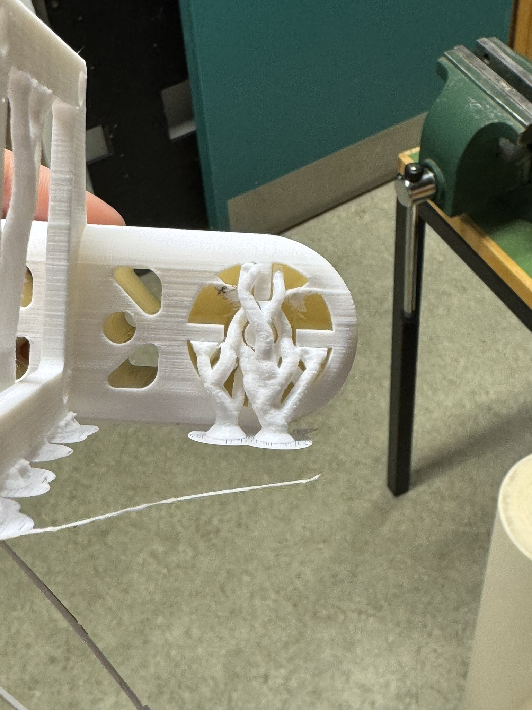

Individual Project: 3D Printing and Design Constraints
The objective of this project was to design a model for 3D printing that could not be easily manufactured using subtractive methods. Before printing the final model, tests were conducted on a 3D printer to determine design rules and constraints. The process also included analyzing the results and documenting key lessons learned.
The printed object had to be within the limit of 100g of plastic (as per the slicer estimate), and an additional requirement was to 3D scan an object. The available tools for the project included the Prusa MK3+ and the Creality CR-10 MAX printers, along with software such as Tinkercad and Fusion 360 for design.
3D printing
For this project, I chose to design and 3D print a robotic arm, which was part of another assignment in a different class. The complexity of the design made it a suitable challenge for additive manufacturing, as it includes intricate joints and structures that would be difficult or impossible to produce with subtractive methods.
Below, you can explore an interactive 3D model of the entire robotic arm assembly.
And here is the interactive 3D model of the arm that I printed as part of this assignment:
As you can see the arm has some funky things attached to it. The frame to the side of it is an attachment for a 24v fan. The little hook that is there too is made to hold a temperature sensor. Both of these are neccesary for the assignment for the other course.
I also added holes and cut-throughs to cut down on weight and add a possible future insert point for axles and other stuff. On the right side I also added a press fit joint so that I could fit the arm to the gear that drives it. I offset it by 1mm so that I would be certain the two components would fit.
Here is the part just before it finishes, we added print supports so as to make sure there were no overhang problems. We also used organic supports to cut down on weight and save material.
Organic support holding up the frame for the fan. Very clever way to avoid overhang failure.
Organic support filling in the press fit slot so as to avoid overhang failure.
Another picture just for a better angle.
After having fitted the newly printed arm to the rest of the robot assembly we started testing.
At first the robot arm seemed to handle fine. It was light enough for the little stepper motor to hold it. But when we started to add the extra weight of the fan, temperature sensor, the rgb sensor and all of the attached wires, the motor started skipping. 3 Days were spent on trying to make the robot work with an underpowered stepper motor. Alas we caved in, and opted to an emergency fix.
I printed a housing for a bigger stepper motor that could be mounted to the side of the arm. That way we could attain the much needed torque upgrade without a lot of fuss. The housing was attached by sliding into the arm through the available holes and glued in. Then the motor was snuggly slid into the housing and then taped to the arm to enhance stability. After that improvement the entire robot worked as intended, although it was not as pretty as before. A video demonstrating the robot can be seen down below.
3D scanning
Here I took the liberty to scan a couple of things with the app Scaniverse.
Below is an interactive 3D scan model of VR-2's bathroom.
Here you can see that the LIDAR accidentally picked up on my reflection in the mirror. Which is kind of cool, since it made a mirror 3d in a way.
Here is my friend Svavar who had to keep incredibly still while I scanned him.
And here I scanned my beenie, it came out alright.